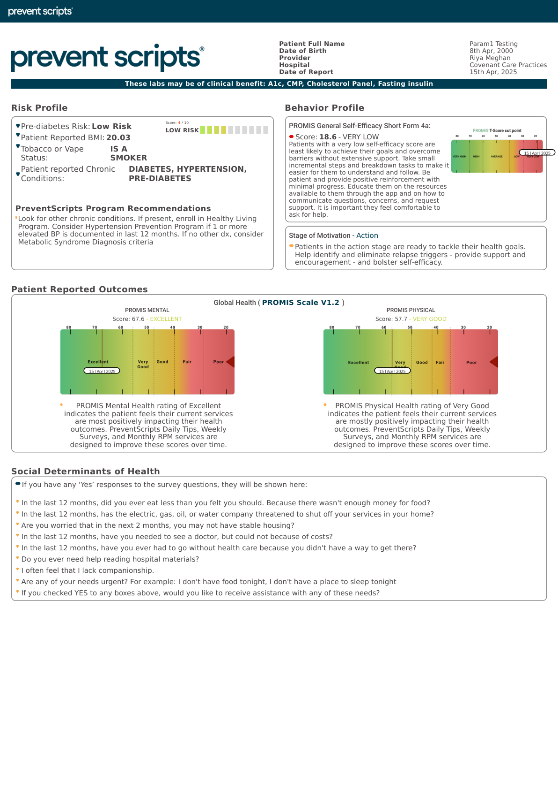
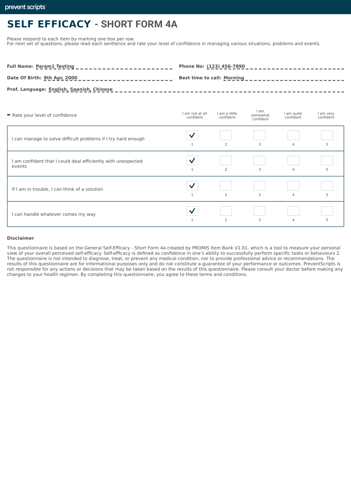
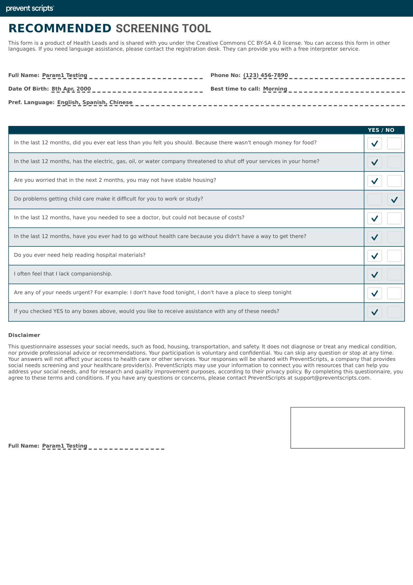
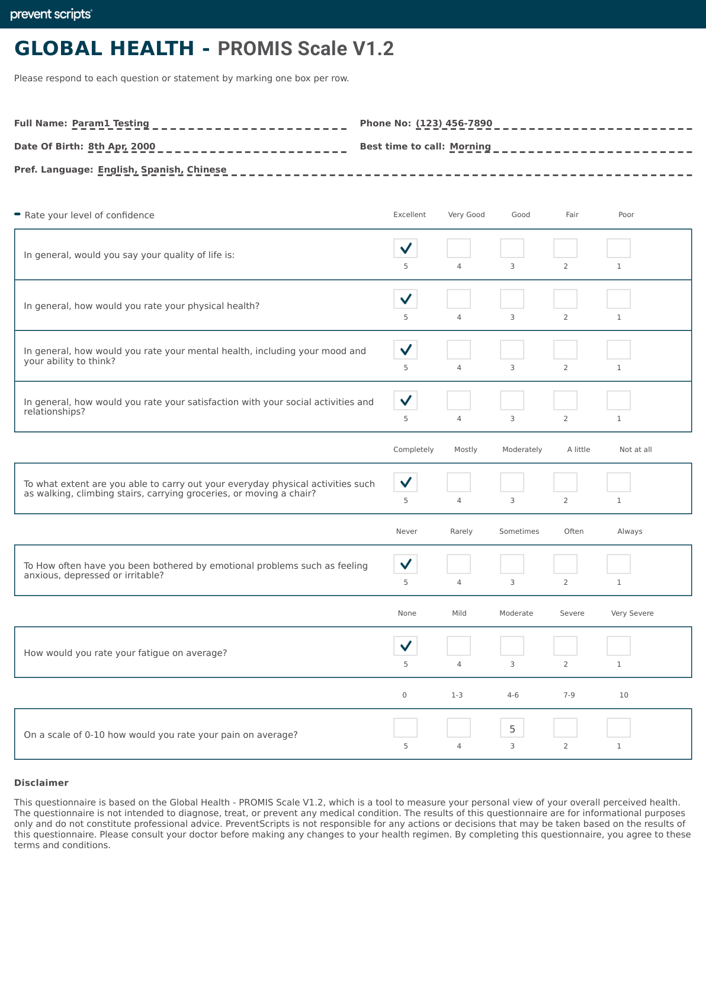
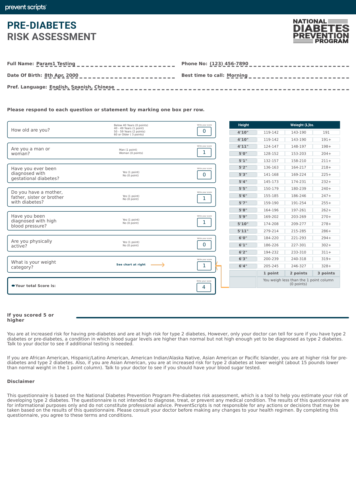
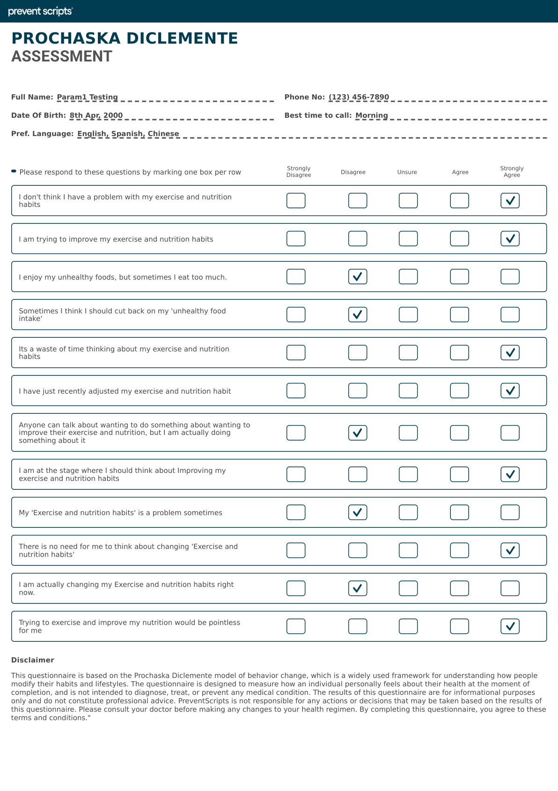
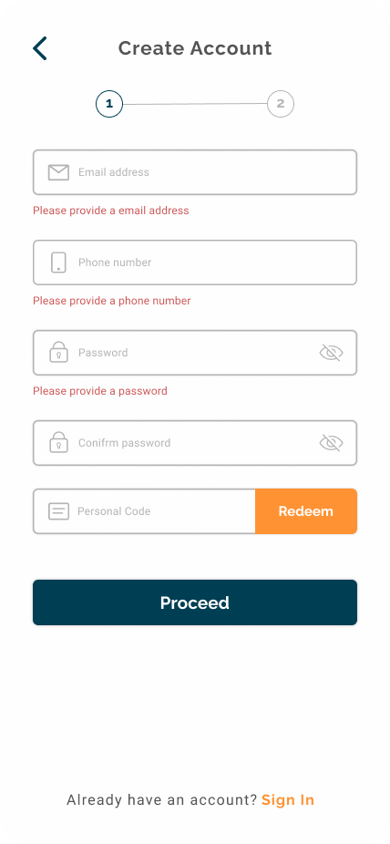
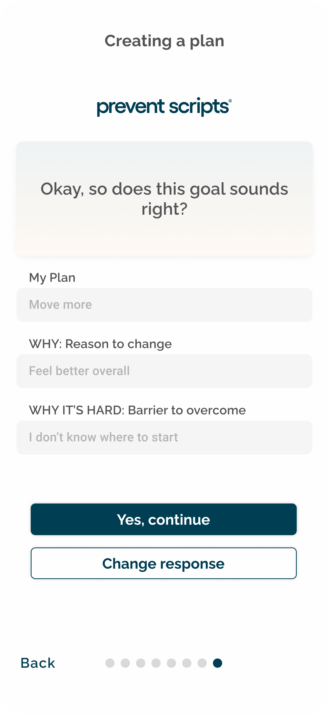

What is PreventScripts?
PreventScripts is a digital health platform designed to support preventive care and chronic disease management through mobile-delivered behavioral interventions. As clinical staff, you'll play a key role in educating patients about how the app complements their clinical care and helps them achieve health goals.
Clinical Value Proposition
The platform delivers evidence-based interventions for conditions including hypertension, diabetes, obesity, and behavioral health. By integrating PreventScripts into your clinic workflows, you can:
- Extend clinical encounters between visits through app-based coaching
- Collect real-world patient data (blood pressure, weight, mood, medication adherence)
- Enable Health Advocacy Coaches (HACs) to provide personalized support
- Reduce no-show rates and improve engagement through automated reminders
- Access actionable patient insights in your EHR via the clinical dashboard
How Clinical Staff Interact with PreventScripts
Key Clinical Touchpoints
Assessment Completion: Patients complete intake assessments within the app to establish baseline health metrics.
Program Assignment: Clinical teams assign condition-specific programs (e.g., HTN, DM2, Behavior Change).
Data Review: You monitor patient progress via assessment reports and the clinical portal.
Escalation Protocol: Flag urgent health concerns to physicians via EHR messaging and the HAC team.
Your Role in Patient Success
Your role as clinical support staff is critical in:
- Education: Explain how PreventScripts fits into their care plan
- Enrollment: Guide patients through initial app setup and first assessment
- Engagement: Use communication scripts to motivate ongoing participation
- Monitoring: Review assessment data and escalate concerns as needed
- Support: Serve as the patient's first contact for technical or clinical questions
Video: PreventScripts Platform Overview
Watch a short overview of the PreventScripts platform. Watch video →
Available Programs
PreventScripts offers programs designed around disease prevention and chronic condition management. Each program includes remote patient monitoring via the PreventScripts app, a Health Advocacy Coach (HAC), and program-specific devices and resources.
Important Note
Program offerings are dependent on contractual agreements between PreventScripts and your practice. Not all programs may be available at your location. Check with your practice administrator for your specific program offerings.
Programs (click through)
Healthy Living Program
For: Patients identified as at-risk for metabolic syndrome, pre-diabetes, obesity, or hyperlipidemia through the PreventScripts assessment.
What patients receive: The RPM mobile app, a bluetooth-connected scale, water bottle, healthy plate magnet, and instructions.
How it works: Daily tracking + weekly My Plans goals + monthly coaching.
Healthy Living with GLP-1 Support
For: Healthy Living-eligible patients who are prescribed GLP-1 receptor agonists (e.g., semaglutide, tirzepatide).
What’s different: Includes Healthy Living + enhanced monitoring/coaching around medication adherence and side effects.
Hypertension Prevention Program
For: Patients with elevated BP documented in the last 12 months without a formal HTN diagnosis.
What patients receive: The RPM mobile app, a bluetooth-connected BP cuff, and lifestyle-focused resources.
Goal: Prevent progression to hypertension through early intervention + regular BP monitoring.
Hypertension Control Program
For: Patients with diagnosed hypertension who need active BP management support.
What patients receive: The RPM mobile app, a bluetooth-connected BP cuff, and more intensive monitoring/coaching.
Goal: Achieve and maintain BP targets via monitoring, adherence support, and lifestyle modification.
How Programs Are Recommended
The PreventScripts assessment automatically generates program recommendations based on the patient's risk profile, chronic conditions, and behavioral data. You'll see this on the first page of the Assessment Report under "PreventScripts Program Recommendations." For example, the sample assessment report recommends:
Program Comparison at a Glance
At-risk / pre-disease patients. Bluetooth scale. Focus on weight, nutrition, activity goals.
Same as above + GLP-1 medication support. Enhanced coaching around medication adherence.
Elevated BP, no diagnosis yet. Bluetooth BP cuff. Prevent progression to hypertension.
Diagnosed hypertension. Bluetooth BP cuff. Active monitoring and intensive coaching.
Understanding the Assessment Report
The PreventScripts assessment is completed by patients before their visit and results are sent directly to the EHR. The assessment report is the clinical decision support tool that triages patients into the right intervention. Understanding each section will help you communicate effectively with patients about their results and recommend the right program.
Below, we'll walk through each page of the assessment report with example screenshots. Click any image to enlarge it.
Quick Read: What to Look for in the Assessment Report
- Page 1 — Program Recommendations: Shows which PreventScripts program(s) are recommended based on the patient's risk profile.
- Page 2 — Stage of Motivation: Shows the Prochaska DiClemente stage (Pre-Contemplation → Maintenance). Guides your communication approach.
- Page 2 — Self-Efficacy Score: A score of 0–100. Low scores (<40) mean the patient needs smaller steps and more encouragement.
- Page 3 — PROMIS Global Health: T-score benchmarked against the US average. T=50 is average; higher is better physical/mental health.
- Page 4 — SDOH Screening: If food insecurity, housing, or transportation barriers appear, address basic needs BEFORE focusing on behavior change.
- Page 5–6 — Behavior Profile: Shows current activity, nutrition, sleep, and stress patterns — context for coaching conversations.
📋 Open the walkthrough below to see the actual report pages.
📋 Optional: View Full Assessment Walkthrough (all 6 pages) →
Page 1: Assessment Results Report

This is the summary page — the most important page of the report. It contains:
- Risk Profile: Pre-diabetes risk score, BMI, tobacco use, chronic conditions
- Behavior Profile: Stage of Motivation (from Prochaska DiClemente) and Self-Efficacy score
- PROMIS Scores: Physical and Mental Health T-scores compared to US average (50)
- SDOH Flags: Social Determinants of Health screening results
- Program Recommendations: Automatically generated based on all the above data
Page 2: Self-Efficacy Short Form 4a

This assessment measures the patient's confidence in overcoming barriers to health behavior change. It uses the NIH PROMIS Self-Efficacy Short Form 4a.
- Score interpretation: T-scores with a mean of 50. Lower scores = lower confidence in managing health behaviors.
- Example from report: A score of 18.6 (Very Low) means this patient has very little confidence in their ability to change. They need smaller steps, more frequent check-ins, and lots of encouragement.
- How to use it: If self-efficacy is low, don't overwhelm the patient with ambitious goals. Start small. "What's ONE thing you feel you could do this week?"
Page 3: SDOH Recommended Screening Tool

This screening identifies social determinant barriers that may affect the patient's ability to engage with the program.
- Areas screened: Food insecurity, housing stability, transportation, utilities, personal safety
- Clinical action: If SDOH flags are present, address basic needs FIRST before pushing program enrollment. A patient who can't afford food won't benefit from lifestyle coaching.
- Referral: Connect patients with social work, community resources, or 211 services as needed.
Page 4: Global Health PROMIS V1.2

The PROMIS Global Health assessment provides standardized measures of physical and mental health.
- T-scores: 50 = US population average. Higher = better health perception.
- Physical Health: Covers general health, physical function (carrying groceries, climbing stairs, etc.), pain interference, and fatigue
- Mental Health: Covers emotional distress, social activities, and quality of life
- Example: A Physical Health T-score of 57.7 ("Very Good") means the patient reports physical health above the US average. A Mental Health T-score of 40 suggests below-average mental health.
Page 5: Pre-Diabetes Risk Assessment

This assessment identifies patients at elevated risk for developing Type 2 diabetes.
- Factors assessed: Age, BMI, family history, physical activity level, history of gestational diabetes, race/ethnicity
- Score interpretation: Higher scores indicate greater risk. Scores above threshold trigger a recommendation for the Healthy Living Program.
- Clinical action: Patients with high pre-diabetes risk scores should be counseled on lifestyle modifications and may benefit from A1C testing if not recently done.
Page 6: Prochaska DiClemente Assessment

This is the "Stage of Change" assessment based on the Transtheoretical Model. It identifies where the patient falls on the readiness-to-change spectrum.
- Pre-Contemplation: Not thinking about change. "I don't have a problem."
- Contemplation: Thinking about it. "I know I should, but..."
- Preparation: Getting ready. "I'm planning to start soon."
- Action: Actively changing. "I'm doing it now."
- Maintenance: Sustaining change. "I've been at it for a while."
Putting It All Together
When you receive a patient's assessment report, follow this reading order:
- Page 1 — Start here: Check Stage of Motivation and Self-Efficacy to know HOW to talk to the patient. Check Program Recommendations to know WHAT to discuss.
- SDOH flags: Any basic needs that must be addressed first?
- PROMIS scores: Physical and mental health context. Low mental health scores warrant extra sensitivity.
- Pre-Diabetes Risk: Does the patient need metabolic screening or Healthy Living referral?
- Self-Efficacy details: How confident is the patient? Adjust goal-setting intensity accordingly.
- Prochaska stage details: Confirm the stage and plan your MI approach (covered in Module 4).
Core MI Techniques (OARS)
| Technique | Example |
|---|---|
| Open-ended questions | "What concerns do you have about making this change?" |
| Affirmations | "It sounds like you've already been thinking seriously about your health." |
| Reflections | "So on one hand you want to feel better, but on the other hand the time commitment feels hard." |
| Summaries | "Let me make sure I understand what you've shared…" |
Stage-Matched Approach (5 Stages of Change)
| Stage | What it looks like | Your approach |
|---|---|---|
| Pre-Contemplation | "I don't have a problem." | Plant a seed — don't push. Share information, respect autonomy. |
| Contemplation | "Maybe I should change… but." | Explore pros and cons together. Use open questions to surface ambivalence. |
| Preparation | "I'm ready to try something." | Help set a small, specific first step. Build confidence. |
| Action | "I've started making changes." | Affirm progress. Address obstacles. Celebrate small wins. |
| Maintenance | "I've been doing this for a while." | Reinforce habit. Help anticipate challenges. Prevent relapse. |
📚 Optional Deep Dive: Stage-matched scenarios & objection handling →
What is Motivational Interviewing (MI)?
Motivational Interviewing is a collaborative, evidence-based communication style designed to help patients resolve ambivalence about behavior change. Instead of lecturing or providing directives, MI clinicians use open-ended questions, reflections, affirmations, and summaries to help patients discover their own reasons for change.
Why MI Matters in PreventScripts
Many patients struggle with behavior change because they feel pressured, judged, or unmotivated. MI techniques—used during enrollment conversations, follow-up calls, and clinic visits—create psychological safety and reinforce the patient's autonomy and self-efficacy. This increases engagement with PreventScripts and improves clinical outcomes.
Core MI Principles
1. Partnership
What it means: You and the patient are collaborators, not adversaries. Avoid a "doctor tells patient what to do" dynamic.
How to practice: Use phrases like "Let's work together on this" or "What do you think would be the best first step for you?"
2. Evocation
What it means: Draw out the patient's intrinsic motivation rather than imposing external pressure.
How to practice: Ask open-ended questions: "What matters most to you about your health?" "How do you see PreventScripts fitting into your goals?"
3. Compassion
What it means: Show genuine care for the patient's wellbeing and prioritize their values and autonomy.
How to practice: Listen without judgment. Acknowledge the difficulty of change. Validate their concerns: "It's tough to fit new habits into a busy schedule—let's problem-solve together."
4. Autonomy Support
What it means: Respect the patient's right to make choices, even if they differ from clinical recommendations.
How to practice: Offer choices: "Some patients find it helpful to track BP daily; others do it weekly. What feels manageable for you?" Avoid ultimatums.
MI Techniques for Clinical Staff
Open-Ended Questions
Instead of: "Do you exercise?"
Try: "Tell me about your typical day—where might you fit in some movement?"
Affirmations
Instead of: Silence when a patient mentions a past success
Try: "You quit smoking for 3 years—that shows real commitment. That's the same strength you can bring to PreventScripts."
Reflections
Instead of: Jumping to advice when a patient expresses doubt
Try: "Sounds like you're worried PreventScripts is too time-consuming, but you also see how it could help your BP. That's a real tension."
Summaries
Instead of: Assuming you understand the patient's concerns
Try: "So you're interested in the weight program, but you've had bad experiences with diets in the past. And you want to make sure you get support that works for your lifestyle. Do I have that right?"
Stage-Matched Communication Scenarios
Patients move through stages of readiness for change. Use these MI-informed scripts depending on the patient's stage.
Patient mindset: "My BP isn't really a problem. I feel fine." or "I've tried programs like this before—they never work for me."
Your MI approach: Don't lecture. Ask curiosity-driven questions about their past, their values, and what they observe about their health.
Patient mindset: "I know I should manage my BP, but I'm not sure I can stick with it" or "PreventScripts sounds interesting, but I'm busy."
Your MI approach: Explore the ambivalence. Help the patient articulate both sides. Gently increase discrepancy between current behavior and values.
Patient mindset: "Okay, let's do this" or "I'm ready to start, but I'm nervous."
Your MI approach: Build self-efficacy. Help the patient develop a concrete plan. Affirm their decision.
Patient mindset: "I'm using the app, logging my data, and working with my coach."
Your MI approach: Celebrate progress. Problem-solve barriers. Deepen commitment.
Patient mindset: "These habits feel more normal now" or "I'm worried about losing progress if I'm not careful."
Your MI approach: Consolidate gains. Plan for relapse prevention. Discuss transition to self-management or ongoing support.
Handling Common Patient Objections with MI
The Enrollment Workflow: Step by Step
This is the complete enrollment flow from assessment to first program session. As clinical support staff, you play a critical role in steps 3-9.
The patient completes the PreventScripts assessment before their visit (sent via pre-registration software the morning of the visit). The assessment results are scored automatically and sent directly to the patient's EHR chart via direct message. The assessment report is also sent to the patient.
“Please complete your pre-visit health assessment here: https://bit.ly/468rEmu. Your answers help your provider best direct your care.”
If the patient hasn’t completed it before arriving, front desk staff can direct them to finish it in the waiting room.
During the encounter, the provider and clinical staff briefly review the assessment results together. If the patient is recommended for a program (see the "PreventScripts Program Recommendations" section on Page 1 of the report), discuss it with the patient. Use the Stage of Motivation and Self-Efficacy score to guide how you communicate.
When the patient wants to enroll, use your keyring or badge resources which contain the steps to guide the patient through downloading the PreventScripts app on their phone (available on App Store and Google Play).
Once the app is downloaded, the patient enters your clinic's unique redeem code to create their account. This code connects the patient to your specific practice within PreventScripts.

Redeem code field is near the bottom of the create-account screen.
⚠️ CRITICAL STEP
The patient MUST verify their email address for security reasons. Enrollment is NOT complete until this step is done. Remind the patient to check their inbox — and their spam/junk folder — for the verification email. Do not move on until this is confirmed.
During the enrollment process, the patient completes the consent form within the app. Please advise them to read it carefully. The completed consent is sent electronically to the EHR and filed in the patient's chart.
⚠️ IMPORTANT — Name Must Match EHR
The patient must use their same first and last name exactly as it appears in the EHR when creating their PreventScripts account. This is required for accurate matching of assessment results, consent forms, and program data back to their EHR chart. A mismatched name will prevent proper integration.
Inform the patient to complete all the onboarding screens in the app. These screens collect additional information needed to personalize their program experience.
At the end of onboarding, the patient is prompted to schedule their first Session with their Health Advocacy Coach. This should be within the next 2 weeks — sooner is better. Encourage the patient to schedule it before they leave the clinic if possible.
During this session, the Health Advocacy Coach will: discuss the program in detail, answer any questions the patient has, and help the patient create their "My Plan" (personalized goals). After confirming the patient is actively engaging with the program, the HAC orders the program-specific kit (Bluetooth scale or BP cuff, water bottle, healthy plate magnet, and program instructions), which ships to the patient's home.

Patients confirm a realistic goal before committing.
Before the end of that first HAC call, the next Session is scheduled — this will be their first official program session, where ongoing monitoring and coaching begins.
Enrollment Checklist
Use this checklist during every enrollment to make sure no steps are missed:
- ☐ Assessment results reviewed with provider
- ☐ Patient informed about recommended program
- ☐ App downloaded (App Store / Google Play)
- ☐ Clinic redeem code entered
- ☐ Email verified (check inbox AND spam folder)
- ☐ Consent form completed and read by patient
- ☐ Name matches EHR exactly (first and last)
- ☐ Onboarding screens completed
- ☐ First HAC Session scheduled (within 2 weeks)
Common Enrollment Questions & Solutions (Optional)
📋 HAC Managed Services Note
If your practice uses PreventScripts HAC Managed Services, this section is handled by our clinical team — feel free to skip to Module 7: HAC Coordination →
This content is provided for practices that manage their own patient communication workflows.
📚 Optional Deep Dive
This module covers patient communication scripts in depth. It’s valuable for practices managing their own patient journeys — but if you’re ready to move on, you can skip ahead.
These are the portal messages patients at your practice may have already received about PreventScripts. Knowing what they've read helps you meet them where they are.
Version 1 (Week 1) — The Announcement
Your practice is now offering a new program called PreventScripts. It’s a simple way to get more support between visits—daily tracking, monthly coaching calls, and a free kit to help you get started. All covered by insurance.
Ask your provider if the program is a good fit for you at your next visit. We’d love to tell you more about it! 🤚
Version 2 (Week 2) — The “How It Works”
Curious what PreventScripts actually is?
Patients who enroll get a Healthy Living Kit mailed to them, plus an app where you set one small weekly goal—like drinking more water or eating more fruit. You track for about 5 minutes a day. Once a month, a member of the PreventScripts team calls to check in and cheer you on.
Ask your provider if it’s right for you! 💙
Version 3 (Week 3) — The Reminder
Patient reminder: PreventScripts preventive care program is now available to patients! It’s our way of walking beside you a little more often—not just when you’re in the exam room, but in the small, everyday moments, too.
If you’ve been curious, just bring it up at your next visit. We’ll be happy to chat about it. 💙
Communication Across the Patient Journey
Beyond the enrollment conversation, you'll use communication scripts at multiple touchpoints: during follow-up calls, in response to patient questions, when addressing non-engagement, and when celebrating milestones. These scripts are designed to be encouraging, non-judgmental, and patient-centered.
Goal: Ensure smooth onboarding, address early barriers, reinforce engagement.
Script: "Hi [name], I'm checking in to see how PreventScripts is going for you. Have you been able to log in and start the first assessment? ... How's that going? ... Any questions or concerns? ... That's great! Keep up the momentum. Your coach will reach out within a few days to give you a call. If you need anything before then, here's my number."
Goal: Acknowledge progress, explore barriers, reinforce behavioral goals.
Script: "Hi [name], I've been looking at your PreventScripts data, and I'm impressed! I see you've been logging your [BP/weight/glucose] consistently. That's the foundation of this program. How are the coaching calls going? ... And the tracking itself—is it feeling manageable? ... Have you noticed any changes in [health metric] or how you feel? ... Let's keep this momentum going. See you at your next visit."
Goal: Identify barriers without shame, re-engage patient, problem-solve together.
Script: "Hi [name], I noticed your logging has dropped off the last week or so. I wanted to check in and see what's going on. ... [Listen.] That makes sense. So the barrier is [time/motivation/technical issue]. Help me brainstorm: what could we do to make this easier for you? ... What if we tried [suggestion]? ... And remember, your coach is there to support you too. Would it help if they called to troubleshoot? ... Okay, I'm going to check back in next week. We're in this together."
Goal: Reinforce positive changes, build self-efficacy, deepen commitment.
Script: "I have great news. Your last [BP/A1C/weight] is the best we've seen, and I know that's because of your work in PreventScripts. You've been consistent with your tracking and your coach tells me you're really engaged. How does it feel to see these changes? ... You should feel proud. You're proving to yourself that you can do this. Let's keep going—your goal is in sight."
Goal: Normalize setbacks, explore causes, refocus on progress and learning.
Script: "I see your [metric] went back up last week. I know that can feel frustrating, especially after the progress you've made. But one week doesn't erase six weeks of wins. Help me understand what happened. ... Ah, [stress/illness/travel]. That's real. Here's the thing: knowing what throws you off helps us prepare next time. What do you think you'd do differently if that situation happens again? ... Great. Let's use what you learned. And keep logging—even the weeks that are harder. That's how we learn."
Response: "That's a fair question. PreventScripts works best for people who are ready to work on their health and willing to be consistent. The evidence shows that patients who use the app and work with their coaches see improvements in [specific metrics]. But you're the expert on your own body and situation. What matters is whether you're willing to give it a real try—at least 4–6 weeks—and see what happens. Does that feel doable?"
Response: "Absolutely. PreventScripts meets all HIPAA requirements and uses the same security standards as our EHR. Your information is encrypted and only accessed by your coach, our clinical team, and healthcare providers you authorize. We don't sell your data. You control what you share and with whom."
Response: "Absolutely. This is optional. But before you stop, I'd like to understand what's not working. Let's troubleshoot together. [Listen.] Would it help to talk with your coach about [concern] or adjust your goals? Or would you feel better pausing for a few weeks and trying again later? Whatever you decide, let's talk about it so you're not struggling alone."
Communication Best Practices
- Be warm and genuine. Patients can tell when you're reading a script robotically. Use your own words, but follow the structure.
- Listen more than you talk. Ask open-ended questions and give the patient space to respond.
- Celebrate effort, not just outcomes. A patient who's trying but seeing slow progress needs encouragement too.
- Never shame or judge. Avoid phrases like "You're not doing well enough" or "Why didn't you..." Instead: "I'm noticing a change. Let's figure out what's going on."
- Make it personal. Reference specific data you've seen, goals the patient mentioned, or values they've shared.
- Offer options. Instead of a directive, give choices: "What would help you the most: a check-in call, written tips, or a coaching call with [coach name]?"
- Follow up on follow-ups. If you say you'll check back in next week, do it. Consistency builds trust.
📚 Optional Deep Dive
This module covers HAC coordination in depth. All essential escalation contacts are in the Quick Reference cheat sheet. Skip ahead if you’re short on time.
Who Are Health Advocacy Coaches (HACs)?
Health Advocacy Coaches are trained behavioral health specialists who deliver personalized coaching to patients enrolled in PreventScripts. HACs have backgrounds in nursing, social work, health education, or behavioral health. They are not physicians but work under clinical supervision. HACs conduct weekly or biweekly calls with patients to support goal-setting, behavior change, and problem-solving.
What HACs Do
- Initial patient call: HAC reaches out after first assessment to introduce themselves, review patient goals, and establish rapport.
- Weekly/biweekly coaching: Regular calls focused on goal-setting, tracking progress, problem-solving barriers, and reinforcing behavior change.
- Education delivery: Share evidence-based content on nutrition, exercise, medication adherence, stress management, etc.
- Crisis/escalation: Identify urgent safety concerns (suicidal ideation, dangerous BP, etc.) and escalate to clinical team immediately.
- Program customization: Tailor coaching approach based on patient's stage of change, cultural context, and learning style.
- Data tracking: Review patient's app data (logs, trends, engagement) and adjust coaching priorities based on what they're seeing.
How You Coordinate with HACs
Referral to Coaching
After enrollment, you (or the clinical team) submit a brief referral form with patient baseline data, program assignment, clinical context, and any special notes (e.g., "Patient has anxiety; can feel overwhelmed—go slow" or "Patient is highly motivated; can handle aggressive goals").
Ongoing Communication
EHR messaging: Use your clinic's EHR to message HACs about patient concerns, data you've reviewed, or changes in clinical status. Example: "Mrs. J's BP has been 160/100+ despite PreventScripts—should we increase meds? What's she told you about adherence?"
Scheduled calls: For complex patients or high-risk escalations, set up a conference call between you, the patient, and their HAC to align on goals and next steps.
Data Sharing
Review the patient's PreventScripts assessment reports regularly (at least monthly for active patients). Share key insights with the HAC via EHR note or message. Example: "Assessment shows patient's mood score is low and she's reporting low sleep quality. Added to today's coaching agenda per her request."
Escalation Protocol
If HAC flags a clinical concern: They'll message you immediately or call if urgent. Example: "Patient reported chest pain during coaching call; patient says it resolved with rest. FYI for your team." Your response: Review the patient's chart, consider clinical exam or EKG, and follow up with patient directly.
If you identify a concern during a clinic visit: Message the HAC to brief them. Example: "Patient's glucose log shows frequent lows at 3 AM; recommending basal insulin adjustment. Can you reinforce sick day management in next call?"
Expectations for HAC Partnership
What HACs Can and Cannot Do
HACs can: Provide behavioral coaching, deliver education, help with goal-setting, offer emotional support, identify barriers, and refer patients back to clinical team.
HACs cannot: Diagnose conditions, adjust medications, provide medical advice, or make clinical decisions. All clinical decisions rest with the supervising clinician.
Communication Scenarios with HACs
Your EHR message: "Hi [HAC name], I notice John hasn't logged in for 2 weeks. Have you been able to connect with him? If not, can you try calling? He mentioned at his visit that work has been stressful. Might be a good time to check in."
Expected response: HAC will reach out to patient, report back within 24 hours with update on what's happening and suggested next steps.
HAC's message (urgent): "Patient disclosed passive suicidal ideation during today's call: 'I'd be better off dead, but I wouldn't do anything.' Patient denies active plan/intent. I'm concerned. Please follow up."
Your response: Thank HAC immediately. Review patient chart. Call patient today for in-depth safety assessment. Consider psychiatry referral, crisis line info, or emergency evaluation based on clinical judgment. Message HAC back with your plan: "Speaking with patient today. Referred to psychiatry. Please check in with her this week."
Your EHR message: "Maria's A1C came in at 6.2—great progress! She's been asking about adjusting her exercise goal from 5 to 7 days/week. I think it's realistic for her, but I want your read based on your coaching calls. Think she's ready, or is there a barrier I'm missing?"
Expected response: HAC will report back. If aligned, she'll bring it up in next coaching call as patient's idea (builds autonomy). If concerned, she'll explain barrier and suggest tweaking approach.
Building a Strong HAC Partnership
- Respond promptly to HAC messages. They often need guidance from the clinical team—delays can slow patient care.
- Share context and clinical data regularly. Don't wait for HACs to ask. If you see something in an assessment report, mention it.
- Respect HAC expertise in behavior change. They're specialists in motivation and barrier-solving. Ask their opinion on approach before directing patient behavior.
- Set clear escalation protocols. Make sure you and HACs agree on what constitutes an urgent flag (chest pain, suicidal ideation, dangerous vitals) vs. routine updates.
- Include HAC in patient discussions when possible. If you're adjusting goals or discussing a barrier, looping in the coach ensures alignment.
- Give feedback when things go well. If a patient reports great coaching or improved engagement, tell the HAC. Recognition matters.
Cheat Sheet: Key PreventScripts Facts
Enrollment Criteria
HTN: BP ≥140/90 or on meds
DM2: A1C ≥7% or new diagnosis
Weight: BMI ≥30
Behavioral: PHQ-9 ≥10 or GAD-7 ≥10
Pre-Visit Assessment Link
https://bit.ly/468rEmu
Sent automatically with appointment reminders. Patients can also complete it in the waiting room if needed.
Red Flag Symptoms
Escalate immediately: Chest pain, SBP >180, DBP >120, suicidal ideation, severe hypoglycemia, acute psychiatric crisis
Contact Info
Patient support: support@preventscripts.com | (859) 287-4977
Clinical staff: portal.preventscripts.com (Ask tab)
Common Myths
Myth: "The app replaces clinical care." Truth: PreventScripts extends clinical care between visits.
Myth: "Patients must log daily." Truth: Flexible frequency; coach helps set sustainable cadence.
Your Roles
Clinical: Identify patients, oversee enrollment, review data, manage escalations
Supportive: Field patient questions, celebrate progress, troubleshoot barriers
Enrollment Quick Steps
- Review assessment results with provider during encounter
- Discuss program recommendation with patient (use Stage of Motivation to guide approach)
- Download app — use keyring/badge resource for steps
- Enter clinic redeem code to create account
- Verify email ⚠️ — enrollment NOT complete until done (check spam folder!)
- Complete consent form in app — advise patient to read it
- Confirm name matches EHR ⚠️ — exact first and last name
- Complete onboarding screens
- Schedule first HAC Session — within 2 weeks, sooner is better
Quick Read: Assessment Report
- Stage of Motivation — determines your communication approach
- Self-Efficacy score — how much support does this patient need?
- Program Recommendation — which program to discuss
- SDOH flags — any basic needs to address first?
- Risk Profile — pre-diabetes risk, BMI, tobacco, chronic conditions
- PROMIS Global Health — mental and physical health composite scores
Step-by-Step: Responding to "My Metrics Aren't Improving"
- Validate: "I hear your frustration. It's discouraging when you're putting in effort and not seeing results yet."
- Ask questions: "Tell me more. What have you been doing? What's been hard?"
- Look at the data: Is engagement consistent? Are they actually doing the behaviors? Or just not seeing results?
- Adjust expectations: "Some changes take 4–6 weeks to show up. You're still early. Let's keep going."
- Troubleshoot together: "What one thing would make the biggest difference for you?" (Bring HAC in if needed.)
- Follow up: Set a date to check progress in 2–3 weeks.
Medication Adjustments & PreventScripts
Key Point: PreventScripts Complements, Not Replaces, Medical Management
If a patient's metrics aren't improving despite consistent behavioral intervention (good logging, coaching engagement, behavior change), it may be time to adjust medications. Discuss with the supervising physician. Document the clinical rationale. Inform the HAC of any med changes so they can discuss side effects and adherence in coaching calls.
Test Your Knowledge
Answer these 10 questions to check your understanding of the clinical training. You need 80% (8/10) to earn your Certificate of Completion. You can review any module if you're unsure about an answer.
1What validated tool does PreventScripts use to measure a patient's readiness to change their health behaviors?
2A patient's assessment shows a Self-Efficacy score of 18.6 (Very Low). What does this tell you?
3Which of the following is NOT one of the OARS motivational interviewing techniques?
4During enrollment, which step is CRITICAL and must be completed for enrollment to be finalized?
5A patient is in the "Contemplation" stage of change. Which approach is most appropriate?
6Why is it important that patients use their exact name from the EHR when creating their PreventScripts account?
7What does a PROMIS Physical Health T-score of 57.7 rated "Very Good" indicate?
8A patient's SDOH screening reveals food insecurity, unstable housing, and transportation barriers. What should be your FIRST priority?
9After a patient enrolls and completes onboarding, what is the next step?
10Which PreventScripts programs include a bluetooth blood pressure cuff in the starter kit?
📚 Optional Deep Dive
This module contains real-world case studies that reinforce what you’ve learned. Great for deeper understanding — or skip to complete your training.
PreventScripts Case Studies
Review these real-world case studies to see PreventScripts in action:
Practice Scenarios
Below are common situations you'll encounter as clinical support staff:
Case 1: High Engagement, Excellent Results
Patient Profile: Maria, 58F with hypertension, newly referred to HTN program at clinic visit.
Enrollment: You explain PreventScripts in clinic. Maria is concerned about time but interested. You set up the app together, review the first assessment questions with her, and she goes home to complete it.
Program Course: Maria logs BP data 6 days/week. Coaching calls are consistent. By week 6, her BP has dropped from 158/94 to 142/88. By week 12, it's down to 136/82.
Your Role: At week 4 visit, you review her progress, celebrate the trend, ask how the coaching is going. At week 8, you message her HAC: "Maria's A1C also improved—great collaboration." At week 12, you schedule her follow-up and discuss whether to continue with PreventScripts for maintenance.
Key Takeaway: Strong engagement + clinical oversight = excellent outcomes. Consistency matters.
Case 2: Engagement Barrier (Too Busy)
Patient Profile: James, 62M with Type 2 Diabetes; works two jobs; referred to DM2 program.
Enrollment: You pitch PreventScripts in clinic. James is interested but skeptical about time. You emphasize flexibility: "Your coach works around YOUR schedule, not the other way around."
Program Course: James logs glucose sporadically for the first 3 weeks. Misses two coaching calls. You call him week 4: "I noticed logging has dropped. What's going on?" James admits: "Work's been crazy. I feel bad about it."
Your Response (MI-Informed): "I hear you. Two jobs is a lot. But here's the thing—your A1C matters for your health. Let's figure out what's realistic. What if we aimed for 2x/week logging instead of daily? And maybe your coach calls you during a lunch break when you're less busy?"
Outcome: James agrees. Coach adjusts call timing. Logging resumes at more sustainable pace. By week 12, his A1C has improved from 8.2 to 7.6.
Key Takeaway: Barriers are normal. Problem-solve WITH the patient rather than judging. Flexibility helps.
Case 3: Escalation—Safety Concern
Patient Profile: Sandra, 45F with depression history; enrolled in Behavioral Health program; also on antidepressants.
Enrollment: Sandra is enthusiastic about PreventScripts. First assessment shows PHQ-9 = 12 (mild depression). Notes indicate she's "hopeful about getting better."
Program Course: By week 3, Sandra's mood logs show worsening mood scores. HAC calls week 4 and documents: "Patient disclosed passive suicidal ideation: 'Sometimes I think everyone would be better off without me, but I wouldn't act on it.' Denies active plan. Tearful during call. Highly distressed."
HAC's Action: HAC immediately messages you: "URGENT: Sandra reporting SI during today's call. Please follow up."
Your Response: You call Sandra same day. Do a thorough safety assessment: history of attempts? Access to means? Support system? Current med effectiveness? You determine she needs psychiatry evaluation. You: 1) Schedule urgent psych visit, 2) Give her crisis line number, 3) Inform her family, 4) Document fully, 5) Message HAC with plan.
Outcome: Psychiatrist adjusts medication. Sandra continues PreventScripts with increased HAC support. She gradually improves.
Key Takeaway: Mental health crises are real. Trust HAC escalations. Act fast. Psychiatry collaboration is essential.
Case 4: Data Mismatch—Reported Behaviors vs. Outcomes
Patient Profile: David, 52M with hypertension; enrolled in HTN program; tells you he's "doing everything right."
Program Course: Assessment report shows: David logs BP daily (good engagement). Data shows he's tracking ~2 days/week of exercise (goal: 5 days). Diet diary shows sodium intake averaging 2500mg/day (goal: <2300mg). BP remains 152/92—no improvement after 8 weeks.
Your Observation: David SAYs he's exercising 5 days/week and cutting salt, but the app data shows otherwise. Goals may be unrealistic or patient may be under-reporting.
Your Approach (MI-Informed): In clinic, you review the assessment report with him. "I see your BP logs here [point to data]. And I'm also seeing your exercise tracking. Tell me what you notice." David admits: "Okay, work's been busy. I haven't been as consistent as I said."
Problem-Solve Together: "Let's be realistic. What would be a sustainable exercise plan for you RIGHT NOW?" David commits to 3 days/week. You also ask about salt: "What are your biggest sodium sources?" He identifies restaurant meals. You work together on a strategy: "What if you cook at home 3 nights/week instead?"
Outcome: After 4 weeks with adjusted, realistic goals, David's engagement improves AND his BP starts trending down.
Key Takeaway: Data tells the real story. Don't assume verbal reports. Use data + conversation to find true barriers and set realistic goals.
Recap: Your Role as Clinical Support Staff
- Patient Identification & Education: Use clinical criteria to find eligible patients. Explain PreventScripts clearly.
- Enrollment & Setup: Guide patients through enrollment, password creation, first assessment. Ensure informed consent.
- Ongoing Communication: Use MI-informed scripts. Celebrate progress, problem-solve barriers, check in regularly.
- Data Monitoring: Review assessment reports monthly. Identify trends, barriers, and escalation needs.
- HAC Collaboration: Communicate regularly with HACs. Share clinical context. Escalate urgent concerns immediately.
- Escalation Protocol: Know red flags (chest pain, SI, dangerous vitals). Act fast. Loop in physician.
- Clinical Integration: Use PreventScripts data in clinic visits. Adjust treatment plans (meds, goals) based on response.
Additional Resources & Support
Clinical Portal
View assessment reports, message HACs, access documentation
Training Resources
Visit the Clinical Portal for:
Video tutorials, FAQ for staff, Enrollment templates, Escalation flowcharts
🎉 Training Complete!
You've completed all 10 modules of the PreventScripts Clinical Training. Congratulations!
Next Steps: Bookmark this page. Review modules as needed. Reach out to your PreventScripts team if you have questions.